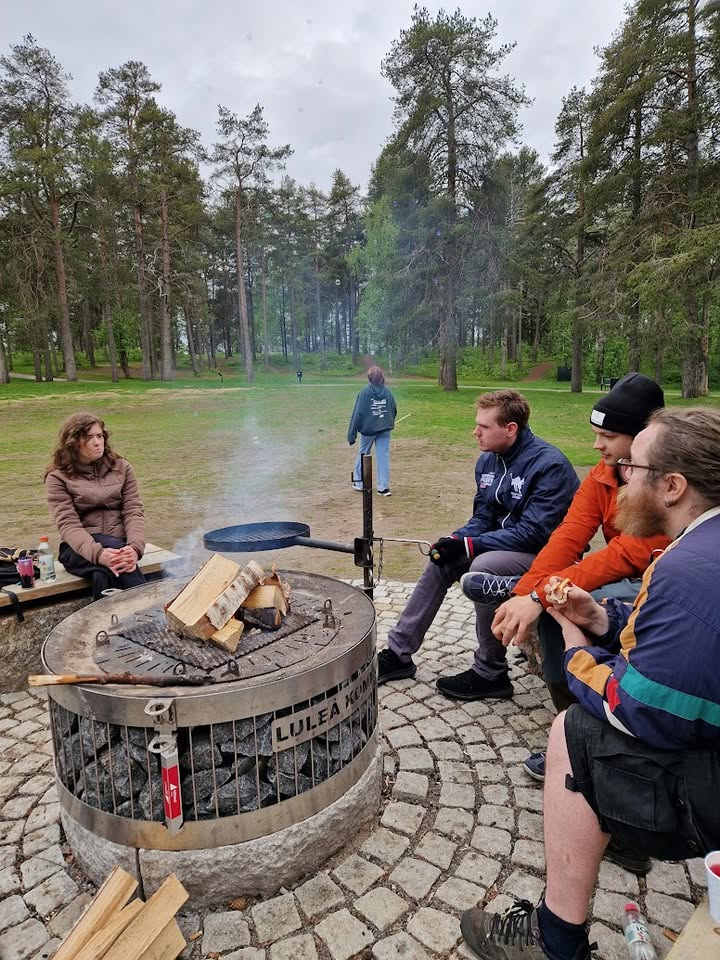
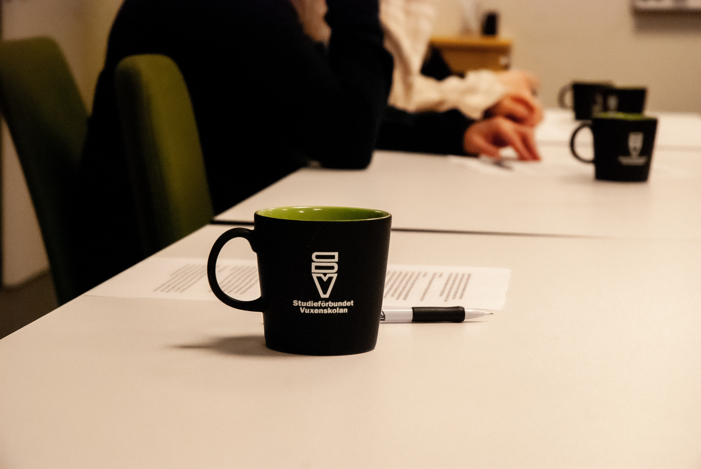

Vi bjuder in till grill, sommarspel och möjlighet att träffa oss i föreningen.
Varmt välkommen, vem du än är!
Anmäl dig här!
Radioteater
Under våren 2026 kommer vi spela in en radioteater till ett färdigskrivet manus. Det kommer vara en möjlighet för våra medlemmar att lära sig och prova på vad som krävs för att göra en trovärdig värld genom enbart ljud.
Berättelsen utspelar sig i ett Norrland fyllt av mystiska väsen och magi. Huvudkaraktären har ärft en gård i en fiktiv by djupt i Norrbottens skogar. Där kommer hon uppleva en hel del mystiga och konstiga ting som kommer bli mycket kul att sätta ljud på.
Just nu siktar vi på att ha 10 träffar under våren för att kunna spela in all dialog och ljudeffekter. Detta kommer gå som en kurs via Studieförbundet Vuxenskolan samt att information kring denna kurs kommer läggas ut här.
Hoppas att vi ses där!
Anmäl dig här!